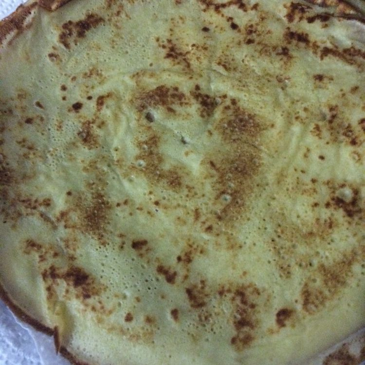

Blinkchik (Russian Pancakes)

Blinchik is an Eastern European pancake made from various kinds of flour of buckwheat, wheat, etc.
Description:
In the West, blini traditionally refers to small savory pancakes made with leavened batter. In modern Russian, the term most often refers to pan-sized leavened thin pancakes, although smaller leavened pancakes are also called blini.
Ingredients:
- 4 1/4 cups milk
- 5 large eggs
- 2 tbsp white sugar
- 1/3 tsp salt
- 1/2 tsp baking soda
- 1/8 tsp citric acide powder
- 4 cups all-purpose flour
- 3 tbsp vegetable oil
- 1 cup boiling water
- 2/3 cup butter, divided
Steps:
- Beat together milk and eggs in a large bowl until combined. Beat in sugar and salt. Mix in baking soda and citric acid until incorporated. Blend in flour, a little at a time, until combined. Beat in oil. Pour in boiling water, stirring constantly, until batter is thin and watery. Let rest for about 20 minutes.
- Melt 1 tablespoon butter in a small frying pan over medium-high heat. Pick the pan up off the heat. Pour in a ladleful of batter while you rotate your wrist, tilting the pan, so batter forms a circle and coats the bottom. The blini should be very thin.
- Return the pan to the heat. Cook blini for 90 seconds. Carefully lift up edge of blini to see if it's fully cooked: edges will be golden and bottom surface should have brown spots. Flip blini over and cook for 1 minute more.
- Transfer blini to a plate lined with a clean kitchen towel. Continue cooking remaining batter, adding 1 tablespoon butter to the pan for every 4 blinis. Stack blinis and cover with another kitchen towel to keep warm.
- Spread desired filling in the center of each blini. Fold 3 times to make a triangle shape or fold up all 4 sides, like a small burrito.
Return To Homepage